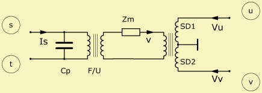

Piezo-drivers have a piezo-electric crystal, which deflects if a voltage is applied,
and thus generate the force F at the attached diaphragm-mass.
Piezo-drivers have a piezo-electric crystal, which deflects if a voltage is applied,
and thus generate the force F at the attached diaphragm-mass.
|
 |
| Purpose | Piezo-electric loudspeaker driver |
| Type | Definition |
| Domain | Electric - acoustic |
| Used in | Definition part |
| See also | Driver |
Def_PiezoDriver "Any Name"
fs=
Mms=
Cms=
Kms=
Rms=
Qms=
Lamda=
|
Cp=
F/U=
|
dD=
SD=
WD=; HD=
dD1=
SD1=
Elliptical
|
Def_PiezoDriver defines a driver with a piezo-motor. It is referenced by the four-pole network-element Driver.
Piezo-drivers have a piezo-electric crystal, which deflects if a voltage is applied,
and thus generate the force F at the attached diaphragm-mass.
The conversion-factor of the piezo-driver is F/U, i.e. force divided by voltage.
Cp represents the piezoelectric capacitance. Zms is the mechanical impedance of the vibrating system, including the stiffness of the piezo and the suspension of the diaphragm. The mechanical part is similar to the one of the electro-dynamic driver as described in: